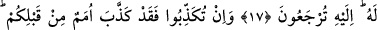

SİZ ALLAH’I
ÂCİZ BIRAKAMAZSINIZ
14. Andolsun ki biz Nuh’u kendi kavmine gönderdik de o bin yıldan elli yıl eksik
bir süre onların arasında kaldı. Sonunda onlar zulümlerini sürdürürken tufan
kendilerini yakalayıverdi.
15. Fakat biz onu ve gemidekileri kurtardık ve bunu âlemlere bir ibret yaptık.
16. İbrahim’i de gönderdik. O kavmine şöyle demişti: Allah’a kulluk edin. O’na
karşı gelmekten sakının. Eğer bilmiş olsanız bu sizin için daha hayırlıdır.
17. Siz Allah’ı bırakıp birtakım putlara tapıyor, asılsız sözler uyduruyorsunuz.
Bilmelisiniz ki, Allah’ı bırakıp da taptıklarınız, size rızık veremezler. O halde rızkı
Allah katında arayın. O’na kulluk edin ve O’na şükredin. Ancak O’na
döndürüleceksiniz.
18. Eğer (size tebliğ edileni) yalan sayarsanız, bilin ki sizden önceki birçok
milletler de (kendilerine tebliğ edileni) yalan saymışlardır. Peygamber’e düşen,
yalnız açık bir tebliğdir.
19. Allah’ın, yaratılanı ilk baştan nasıl yarattığını, (ölümden) sonra bunu(nasıl)
tekrarladığını görmediler mi? Şüphesiz bu, Allah’a göre kolaydır.
20. De ki: Yeryüzünde gezip dolaşın da, Allah ilk baştan nasıl yaratmış bir bakın.